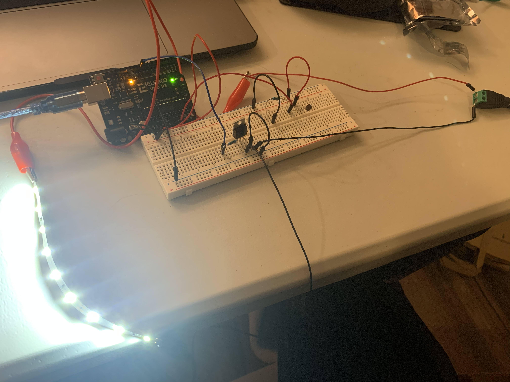

Assignment 4: High(er) voltage and transistors
Schematic
The photoresistor is connected by one leg to 5V of power, and the other leg to an analog INPUT pin, A0, as well as a 10k Ohm resistor and back to GND.
From the microcontroller, Pin 10 connects to a leg of a 1k Ohm resistor, where the other leg is connected to the gate of the transistor by a wire. The source leg of the transistor connects back to ground. The drain leg of the transistor connects to the negative leg of the LED strip through an alligator clip. The positive leg of the LED strip is connected to power by a wire to the positive screw terminal of a 12V power cord, the negative screw terminal connects to the breadboard to circulate back to ground.
Circuit

Photoresistor Calculation
V = I * (R_photoresistor + R)
5V = 0.02A * (R_photoresistor_min + R)
R = 5V / 0.02A
R = 250 ohms < 10000 ohms
Thus, it ensures the current is low.
To ensure that the gate of the transistor gets enough current, the minimum resistor value should be at least 180 Ohms. For this assignment, I used 1k Ohms to be safe with the higher voltage and ensure low current.
Because I'm using 3 LED strip segments, the total current is 15mA(3 * 5mA from class slide).
Firmware
Circuit's operation

When users put light on the photoresistor, the LED turned off. When surrounding is dim, the LED strip light up.